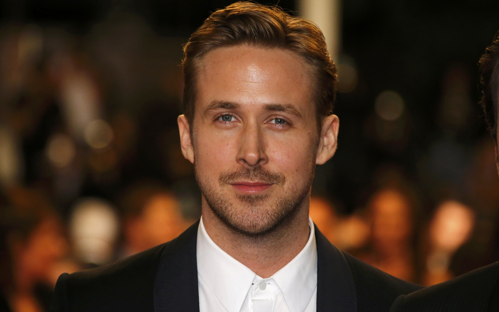

О себе
Я родился 12 ноября 1980 года в Лондоне, провинция Онтарио, Канада. С детства увлекался актёрским мастерством и начал свою карьеру на телевидении, став одним из участников шоу «Клуб Микки Мауса». Я получил мировую известность благодаря ролям в фильмах, таких как «Дневник памяти», «Драйв» и «Ла-Ла Ленд», за который был номинирован на премию «Оскар». Помимо актёрства, интересуюсь музыкой и являюсь участником инди-рок группы «Dead Man's Bones» (группа больше не выступает). В свободное время также поддерживаю различные благотворительные проекты, направленные на помощь детям и защиту животных.
Какие фильмы мне нравятся
- «Драйв» — с Райаном Гослингом
- «Бегущий по лезвию» — с Райаном Гослингом
- «Бойцовский клуб» — с Эдвардом Нортоном и Брэдом Питтом
- «Пленницы» — с Джейком Джилленхолом
- «Остров проклятых» — с Леонардо ДиКаприо
Какая музыка мне нравится
- «Я поднимаю свою голову вверх» - Серёга Пират
- «Извини, сегодня праздник» - Серёга Пират
- «Апельсин» - Серёга Пират
Как связаться со мной
Вы можете найти меня в социальных сетях:
